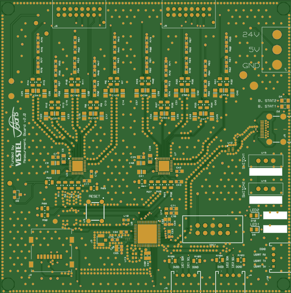
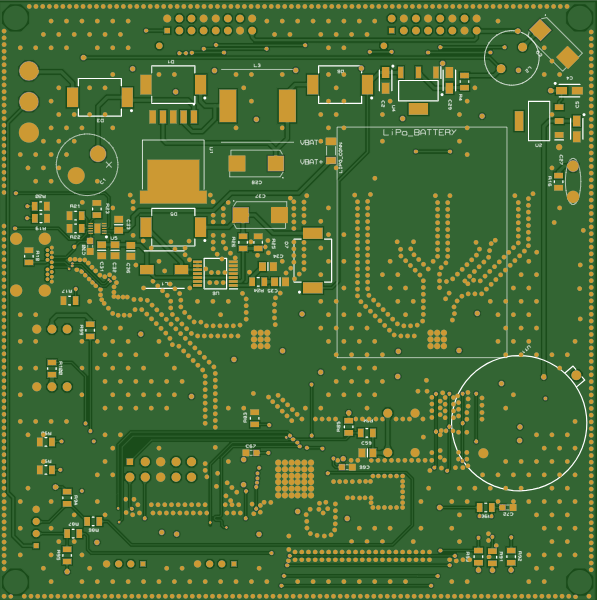
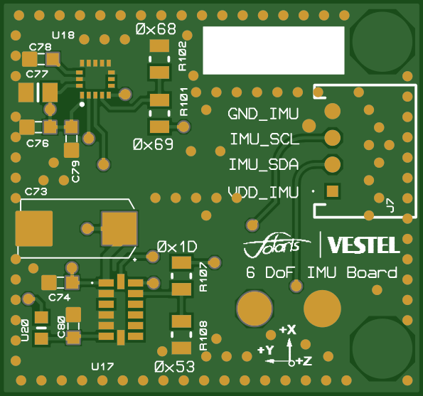
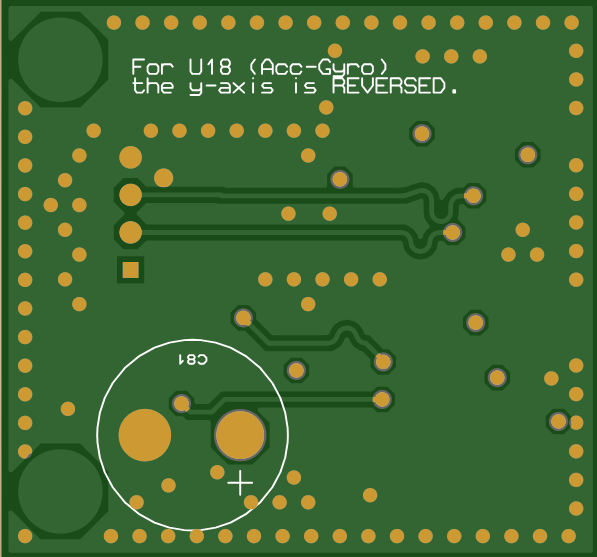
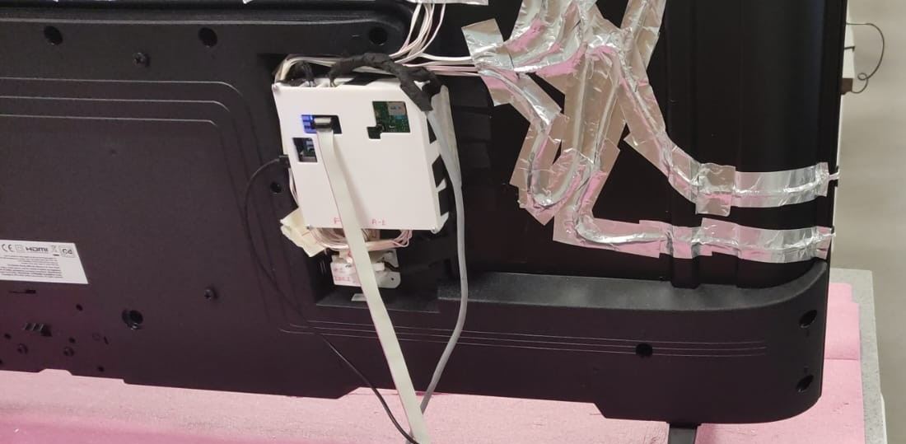
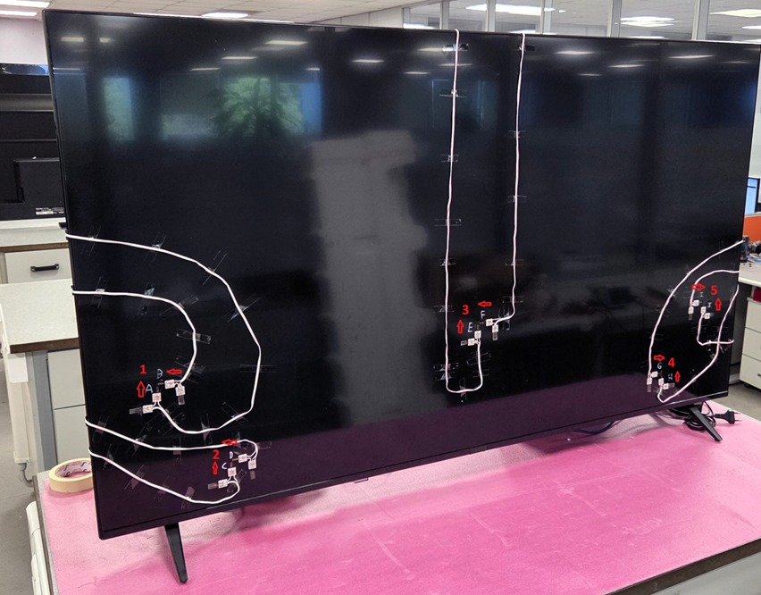

Role: Electronic Engineer at VESTEL
A comprehensive engineering validation project utilizing custom-designed electronics to cross-validate digital Ansys simulation results with real-world physical drop test data.
During my tenure as an Electronic Engineer at VESTEL, our team conducted rigorous ISTA 6 mechanical stress and drop tests. While we utilized the Ansys simulation environment to predict product durability digitally, relying purely on software simulations left a gap in our testing confidence. We needed a highly reliable way to capture the exact physical forces—tension, angle, and acceleration—acting on the product during a live drop to ensure our digital models mirrored reality.
To bridge the gap between software and physical testing, I engineered a custom Data Acquisition (DAQ) electronic system from the ground up. I designed a dual-board solution featuring a Main processing PCB and a custom IMU (Inertial Measurement Unit) sensor board. By strategically combining these boards with strain gauges mounted directly to the product, we successfully captured microsecond-level impact data.
Furthermore, because physical wires would alter the fall mechanics of the product, I implemented a wireless data transmission protocol. This allowed for real-time telemetry monitoring throughout the testing process without interfering with the physical drop.
To capture this high-fidelity data, the system was split into two custom-designed boards that worked together seamlessly:
Because of its tiny footprint, the custom IMU board was mounted directly at the critical impact zones predicted by Ansys. It housed a high-precision accelerometer and gyroscope to capture the exact rotational velocity and extreme deceleration the moment the product hit the ground.
The Main PCB acted as the central processing unit. It handled power regulation, processed the high-speed signals coming from both the IMU and the external strain gauges, and handled the wireless telemetry to transmit the data in real-time to our monitoring stations.

The primary processing hub handling sensor inputs and wireless data transmission.

Bottom routing for power distribution and high-speed signal processing.

Houses the critical accelerometer and gyroscope to measure impact forces.

Compact footprint designed specifically for mounting at high-stress impact zones.
The collected live data was analyzed and cross-validated directly against our Ansys simulation environment. This hardware-to-software validation loop successfully proved the accuracy of our simulations, significantly enhancing the reliability of VESTEL's test evaluations and future product designs.

The custom DAQ system securely mounted onto the VESTEL product prior to the ISTA 6 drop test.

A strain gauge attached directly to the chassis to capture precise physical material tension.